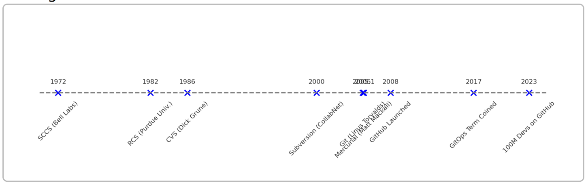

Historical Evolution of Version Control Systems
The timeline of VCS
- 1972: Source Code Control System (SCCS) – one of the first version control systems, developed at Bell Labs, which introduced the basic idea of tracking changes (initially used on IBM mainframes).
- 1982: Revision Control System (RCS) – released by Walter Tichy at Purdue University, RCS automated change tracking for individual files using delta storage (storing differences between file versions). RCS was a local VCS (no network support), handling one file at a time.
- 1986: Concurrent Versions System (CVS) – developed by Dick Grune as a front-end to RCS, CVS allowed collaboration on whole projects with a client-server model. It added networked repositories and concurrent multi-developer capabilities to RCS and became widely used in the 1990s despite limitations (e.g., non-atomic commits and tricky branching).
- 2000: Subversion (SVN) – created by CollabNet as a successor to CVS, Subversion improved on CVS’s weaknesses. SVN introduced atomic commits (all-or-nothing changesets), better handling of file renames, and more efficient network operations. SVN remained centralized: a single repository stored the code and developers committed to that central server.
- 2005: Git and Mercurial – a breakthrough year. After BitKeeper's license issues, Linus Torvalds created Git and Matt Mackall released Mercurial. Both are distributed version control systems (DVCS), where every user has a full copy of the repository. Git quickly became the dominant VCS.
- 2008: GitHub launched – GitHub provided a web-based collaboration platform on top of Git, with pull requests, issue tracking, and social features that accelerated Git's adoption. Similar services (Bitbucket, GitLab) followed.
- 2010s: Wide adoption of Git – many teams and open-source projects migrated from CVS, SVN, and other tools to Git. Distributed version control became the standard workflow across much of the industry.
- Late 2010s: GitOps and modern practices – the term GitOps (coined by Weaveworks) promoted using Git as the single source of truth for infrastructure and deployments. VCS integration with CI/CD became mainstream.
- 2020s: AI and large-scale collaboration – cloud-hosted VCS platforms reached massive scale and AI began assisting code management and review. Version control remains central to modern DevOps workflows.
Why distributed VCS changed the game (branching/merging models)
- Centralized VCS: single server holds the official repo; requires network access; single point of failure.
- Centralized branching: branching/merging was heavier, so teams often used fewer branches.
- Distributed VCS: every developer has a full clone and full history; commits can be local.
- Branching is cheap: easy creation/switching encourages feature/topic branches.
- Merging is first-class: DVCS provide better merge tooling and conflict handling.
- Offline work: developers can commit, view history, and test without network access.
- Redundancy: every clone is a backup, reducing risk from server outages or data loss.
-
Practical effects:
- Cheap branches → more parallel development and experimentation.
- Local commits → cleaner, organized commit history before sharing.
- Stronger merges → scalable team collaboration.
- Offline resilience → uninterrupted local work and faster operations.
- Summary: DVCS trade some conceptual complexity for flexibility, speed, and resilience, which drove wide adoption (e.g., Git).
- Result: shift from centralized, file-oriented systems to distributed, collaboration-focused platforms powering modern DevOps.
TIMELINE SECTION
